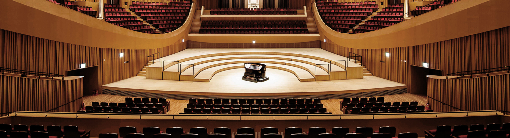
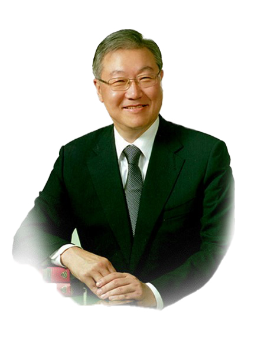

롯데문화재단은 문화예술을 통해 국민의 행복한 삶을 추구하는 시대적 요구에 부응하고,
풍요로운 사회를 만드는데 기여하고자 2015년 10월 설립되었습니다.
롯데문화재단은 개인의 삶과 사회 전반에 미치는 문화예술의 가치가 높은 시대적 흐름에 발 맞추어
2016년 8월 롯데콘서트홀을 개관한데 이어 2018년 1월 롯데뮤지엄을 개관하였습니다.
평범한 일상에 가치를 더하는 예술과 문화, 그 풍요로운 삶의 중심에 롯데문화재단이 함께합니다.
설립취지
- 문화와 예술이 있어 더욱 풍요로운 삶,
기업의 사회적 책임을 다하는 롯데가 함께 합니다. - 21세기를 문화의 시대라고 합니다.
- 오늘날 문화와 예술은 개개인의 삶뿐만 아니라 사회의 성숙도를 측정하는 중요한 가치로 대두되고 있습니다.
- 창립이래 고객의 삶을 풍요롭게 만들기 위해 노력해 온 롯데그룹은
이와 같은 시대적 흐름에 발맞추고자 2015년 10월 롯데문화재단을 설립하였습니다. - 롯데문화재단은 롯데콘서트홀을 통하여 공연을 즐길 수 있는 최적의 환경과 다양한 콘텐츠로
모든 분들의 삶 속에 음악이 흐르는 편안한 공간을 제공하고자 하며,
롯데뮤지엄을 통해 세계 현대미술의 새로운 움직임을 소개하여
반복되는 일상을 감동의 순간으로 변화시키는 마법 같은 시간을 제공하려 합니다. - 롯데문화재단은 그 동안 롯데가 추구해 온 '풍요로운 삶'의 가치를
국민과 함께 나누는 구심점 역할을 다해 나갈 것 입니다. - 이러한 롯데문화재단의 노력에 사랑과 관심을 보내주시는 모든 분들께
다시 한번 감사의 말씀을 드립니다. - ｢ 초대이사장 신동빈 ｣
인사말

- 안녕하십니까?
롯데문화재단 3대 이사장 김성환입니다. - 2015년 출범한 롯데문화재단은 롯데콘서트홀과 롯데뮤지엄 개관을 통해 클래식과 현대미술에 대한 지속적이고 효율적인 지원을 바탕으로 국내 문화 역량을 넓히는데 앞장서고 있습니다.
- 특히 롯데콘서트홀과 롯데뮤지엄은 사계절마다 아름다운 풍광을 선사하는 석촌호수와 샤롯데씨어터,서울스카이,아쿠아리움 등 다양한 문화시설과 함께 공존하며 잠실을 새로운 서울의 문화 메카로 이끄는 중심적인 역할을 하고 있습니다.
- 아울러 롯데문화재단은 롯데그룹의 사회공헌을 담당하는 중추적인 역할을 해 나가며 보다 많은 문화적 가치를 실현하고 있습니다.
- 앞으로도 도심속의 문화공간에서 보다 많은 국민들이 예술의 감동을 통해 일상의 여유를 느낄 수 있도록 노력하겠습니다. 아울러 국내 클래식 및 현대미술의 장을 넓히는 데 기여하며 실력있는 국내 아티스트들의 역량을 강화할 수 있도록 지속적으로 노력하겠습니다.
- 문화를 통해 풍요로운 삶의 가치를 실현하는 롯데문화재단에 많은 관심과 성원을 부탁드립니다.
- 감사합니다.
- ｢ 롯데문화재단 이사장 김성환 ｣